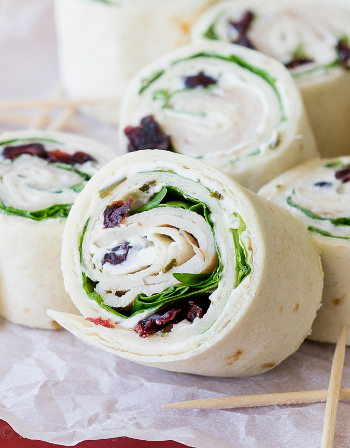

Turkey, Cranberry, and Spinach Roll-ups

A quick and healthy lunch for any day!
These turkey, cranberry, and spinach roll-ups are refreshing
and delicious. Quick to make and perfect for on the go.
Ingredients
- 1 (8 ounce) package cheese, softened
- 4 large whole-wheat sandwich wraps
- 1/4 cup sweetened dried cranberries or to taste
- 12 slices turkey lunch meat
- 1 cup fresh spinach, or to taste
Steps
- Spread 1/4 of the cream cheese onto the middle of each
sandwich wrap. Sprinkle 1 tablespoon cranberries onto cream
cheese on each wrap. Arrange 3 slices turkey atop each wrap
to cover most of wrap. Spread 1/4 cup spinach atop turkey.
- Tightly roll wrap around fillings into a cylinder; cut
into about twenty 1 1/4-inch slices; arrange on a serving platter.
Recipe Source
Return to main page